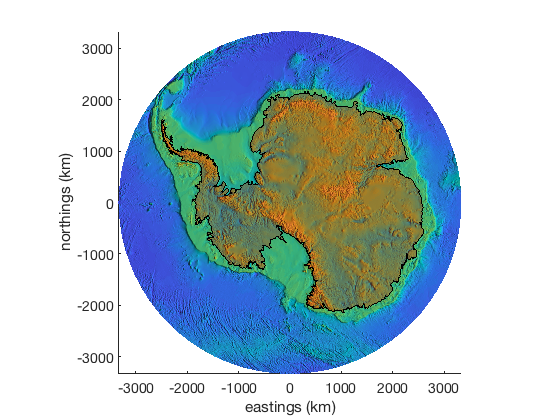

patchps documentation
patchps is part of Antarctic Mapping Tools for Matlab (Greene et al., 2017). Click here for a complete list of functions in AMT.
Don't have Matlab's Mapping Toolbox? No problem. patchps works just like Matlab's patch or patchm functions, but plots georeferenced data in Antarctic polar stereographic coordinates (true latitude 71°S). For example,
patchps(lat,lon,'b')
is equivalent to
[x,y] = ll2ps(lat,lon); patch(x,y,'b')
Contents
Syntax
patchps(lat,lon,cdata) patchps(...,z,cdata) patchps(...,'PropertyName',PropertyValue,...) patchps(...,'km') patchps(...,'meridian',meridian) h = patchps(...)
Description
patchps(lat,lon,cdata) creates a patch object with an outline given by arrays georeferenced coordinates lat and lon. Patch objects are then plotted in south polar stereographic eastings and northings.
patchps(...,z,cdata) specifies line or marker style.
patchps(...,'PropertyName',PropertyValue,...) specifies any number of patch properties.
pcolorps(...,'km') plots in polar stereographic kilometers instead of the default meters.
pcolorps(...,'meridian',meridian) specifies a meridian longitude in the polar stereographic coordinate conversion. Default meridian is 0.
h = patchps(...) returns a column vector of handles to patch objects.
Example 1
Using ASAID grounding line data from the asaid Antarctic Mapping Tools plugin and downsampling to ~3 km resoltution,
load asaid_gl lat = lat(1:200:end); lon = lon(1:200:end); patchps(lat,lon,'b')

Example 2
Similar to Example 1, but with added formatting, plotting in kilometers, and plot in the context of Bedmap2.
[latgrid,longrid,bed] = bedmap2_data('bed','resolution','5 km'); figure pcolorps(latgrid,longrid,bed,'km') xlabel('eastings (km)') ylabel('northings (km)') shadem(-6); % topographic relief shading patchps(lat,lon,'red','facealpha',.3,'km') axis tight
Citing AMT
If this function or any other part of Antarctic Mapping Tools is useful for you, please cite the paper that describes AMT.
Greene, C. A., Gwyther, D. E., & Blankenship, D. D. Antarctic Mapping Tools for Matlab. Computers & Geosciences. 104 (2017) pp.151-157. doi:10.1016/j.cageo.2016.08.003.
Author Info
This function was written by Chad A. Greene of the University of Texas Institute for Geophysics (UTIG), February 2015, for inclusion in the Antarctic Mapping Tools package. Updated July 2015 to allow plotting in units of polar stereographic kilometers.